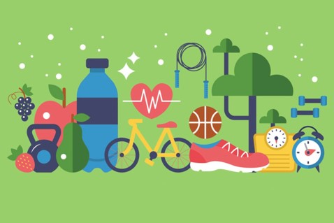

Healthy Habits Week
Published on: 27/10/2023
Written by Cathriona Walsh

The students were asked to cut down on unhealthy processed food for one week to help show how eating healthy can affect your mental and
physical health. Students were advised to try and get a healthier alternative up town rather than
buying a chicken fillet roll, The students brought in healthier options such as carrots sticks and hummus.
The home economics classes made healthy snacks. An example of this is when a second year class made hummus with nutritional and healthy
ingredients.
During the week the new Sancta Maria College water bottles were introduced to the students. Now students are drinking more water and even
lines start to form for the well’s water fountain and other water fountains on the school grounds.
Some students went to a talk about healthy eating, inspiring the students who run the tuck shop to introduce healthier options for students
to choose from.
The students who run the tuck shop decided to have types of fruit selling each day for healthy habits week. The students plan on selling
healthy food from now on, to try to maintain healthy eating as a standard in our school.